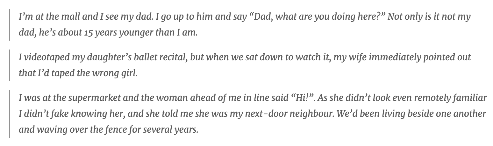

What is prosopagnosia?
Prosopagnosia (also known as face blindness or facial agnosia) is a condition characterised by severe deficits in face recognition that are unrelated to broader dysfunctions of vision, learning, memory, or social skills. Prosopagnosia comes from the Greek words prosopon (face) and agnosia (not knowing). People with prosopagnosia often have trouble recognising faces they have seen many times, like those of family members and friends, and even their own face in a mirror of photographs. Prosopagnosia is not a semantic problem of putting a name to a face (which we all experience from time to time), but a specific visual problem of recognising the face itself. People with prosopagnosia typically recognise others by voice, hairstyle, clothing, gait, and context.
I may have prosopagnosia. Can I get tested?
If you think you may have prosopagnosia please register here. We will be in touch for testing.
What causes prosopagnosia?
Prosopagnosia can be lifelong or acquired following brain damage (usually due to stroke or head injury). Lifelong prosopagnosia is thought to result from developmental or congenital abnormalities that affect face recognition mechanisms. The fusiform gyrus (red in the figure on the right) is a brain structure often implicated in prosopagnosia. People with lifelong prosopagnosia usually report face recognition difficulties for as long as they can remember. Lifelong prosopagnosia does not have a clear biomarker, although recent studies suggest that the face processing regions in people with the condition appear under-activated, under-connected, or both. Lifelong prosopagnosia also tends to run in families, suggesting a genetic contribution. In contrast, acquired prosopagnosia is caused by damage to brain structures that house face processing regions, typically in the right hemisphere. In terms of cognitive account, accumulating evidence suggests that prosopagnosia is related to reduced ability to process faces as a whole (known as holistic face processing).
What skills are affected in prosopagnosia?
By definition, prosopagnosia is a deficit at recognising the identity of familiar faces. However, people with prosopagnosia show varied profiles. Some people have deficits only at identifying familiar faces, others have problems discriminating between unfamiliar faces, still others have issues picking out faces from other objects. Some people have trouble only at recognising faces, others show difficulties with faces and objects. Some show deficits specific to processing of facial identity, others demonstrate difficulties discriminating facial expressions. All this suggests that prosopagnosia is not a unitary condition, but rather a collection of face processing deficits than can go together with other visual deficits.
What signs may indicate prosopagnosia?
Below are several signs that are indicative of prosopagnosia:
- Failure to recognise family members, friends, and other familiar people by their face.
- Failure to recognise people in photographs.
- Failure to recognise people in unexpected places.
- Focusing on hairstyle or other non-face features when meeting new people.
- Relying on distinctive facial features rather than the whole face when attempting to recognise faces.
- Difficulties in settings where people share similar features, like uniform at school.
- Confuse characters in movies and TV shows.
How is prosopagnosia diagnosed?
Prosopagnosia is not included in the Diagnostic and Statistical Manual of Mental Disorders (DSM-5), and there is no formal diagnostic criteria yet. To diagnose prosopagnosia, leading research groups and clinicians use converging evidence from subjective reports (personal anecdotes, self-report instruments) and objective performance on computer-based tests of face recognition. The tests can involve identifying famous faces (celebrities, athletes, politicians, etc.), memorising novel faces and recognising them later, and/or detecting similarities or differences between faces shown next to each other. An additional criteria of brain injury is required to diagnose acquired prosopagnosia.
How common is prosopagnosia? Acquired prosopagnosia is rare, but lifelong prosopagnosia is not uncommon. Estimating the prevalence of lifelong prosopagnosia is not straightforward because it depends on the diagnostic measures and the statistical criteria, but one study in Germany suggests it may affect up to 1 in 50 people. If correct, this estimate means lifelong prosopagnosia may impact up to 140 million people worldwide. Famous people with prosopagnosia include Oliver Sacks, Jane Goodall, Chuck Close.
What impact does prosopagnosia have?
Prosopagnosia can have a significant impact on the lives of those who have it. Here are quotes from some of the people we have worked with:

Many people with prosopagnosia feel guilt and shame when they fail to recognise others. They also experience heightened fear and anxiety in social settings, which can lead to long-lasting social isolation. Children with prosopagnosia can have trouble recognising their teachers and friends and distinguishing them from strangers. One study estimates that the occupational costs of prosopagnosia are comparable to those of dyslexia and stuttering. That said, many people cope well with their prosopagnosia and/or compensate for their face recognition deficits using other strategies that can work well in predictable circumstances.
Can prosopagnosia be treated?
There is no treatment for prosopagnosia yet, but several research groups are working to develop training protocols that can reliably improve face recognition. Recent reviews on this topic are here and here.
Who studies prosopagnosia?
There is a growing community of researchers who study prosopagnosia. We work closely with the groups at Dartmouth and Minnesota. Some of the other groups are based in Boston, Pittsburgh, London, Birbeck, Bournemouth, and Perth.
- © Untitled
- Design: HTML5 UP